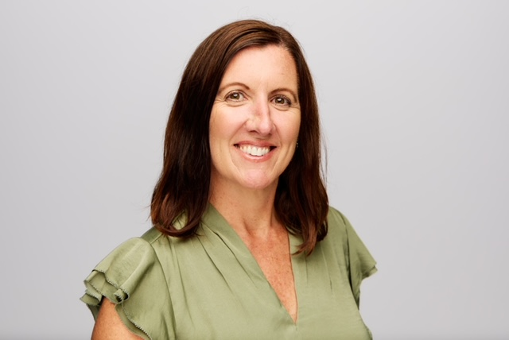
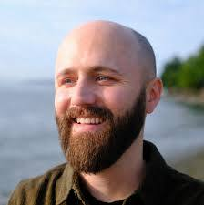

A Collaborative Effort to Reimagine EDMD Care
cureEDMD brings together patients, researchers, clinicians, and investors to accelerate progress for people affected by Emery-Dreifuss muscular dystrophy.
What We’ve Accomplished Thus Far
cureEDMD was officially founded in 2025 by a family with lived experiences with EDMD. Even before the start of cureEDMD, the founders had raised over a million dollars for EDMD research.
Meet Us
Meet the people working together to advance treatments and cures for EDMD.
Ray Mills is the founder and president of cureEDMD and the parent of a son with EDMD. He earned a Ph.D. from Stanford University, a master’s degree from the Massachusetts Institute of Technology, and a bachelor’s degree from Virginia Tech. Ray serves on the advisory board of the Fralin Biomedical Research Institute at Virginia Tech Carillion.

Ann is a board-certified genetic counselor with more than 25 years of experience spanning pediatric genetics, hereditary cancer genetics, telehealth, genomic policy, genetics payment integrity, and clinical billing integrity. Throughout her career, Ann has been committed to helping patients and families understand complex genetic information and navigate their healthcare journeys. Her passion for rare disease advocacy extends beyond her professional work through volunteering with the Wisconsin Rare Disease Alliance and cureEDMD. She believes that listening to patients and families and building a connected, informed community are essential to advancing research and improving the lives of those affected by EDMD.

Walter Bircher is a robotics engineer and Member of Technical Staff at Microsoft, where he works on Physical AI. He earned his PhD in robotic manipulation at Yale University and previously developed robotic hardware at Amazon. His experience also includes NASA’s Jet Propulsion Laboratory and Honeybee Robotics. Walter lives with EDMD and brings his technical background and personal perspective to cureEDMD.
Laura is a scientist with a family member affected by EDMD. She participates in cureEDMD researcher meetings, bringing both her scientific background and her family perspective to the conversation.

Gabriella Snyder is a second-year genetic counseling master's student at the Medical College of Wisconsin (MCW). She graduated from the University of Iowa in 2024 with a bachelor's of science in anthropology and biology.